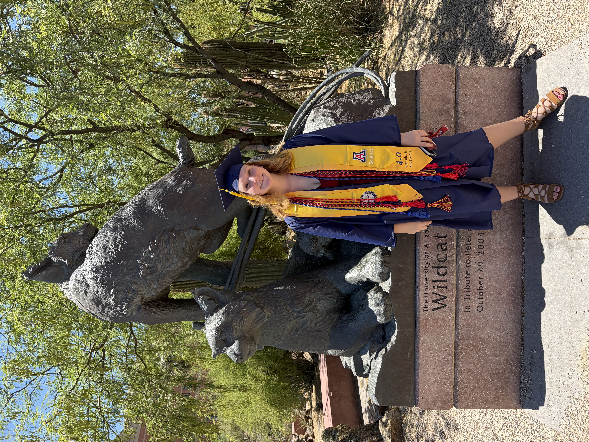
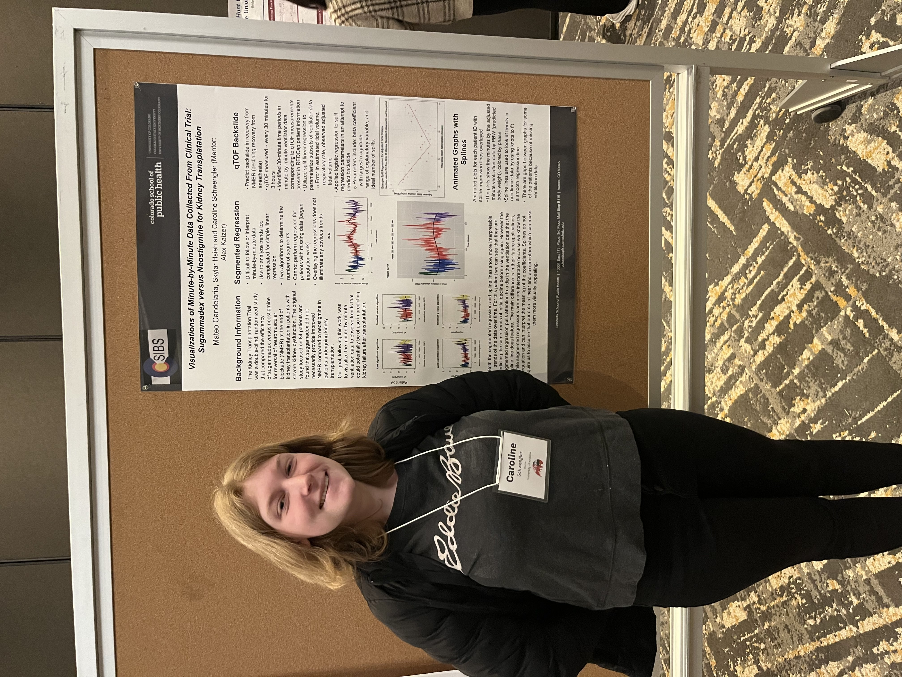

About Me
I’m a Statistics & Data Science graduate student at the University of Arizona with a background in mathematics and computer science. I enjoy statistical modeling, machine learning, and working with large amounts of data to extracting insights from complex problems that can have a real-world impact.
Projects
My projects explore machine learning and statistical modeling across different domains. I’ve worked with protein-structure prediction models, predictive modeling of clinical outcomes, and time-series analysis of patient data, using Python and statistical methods to investigate complex real-world problems.
Future Focus
As I continue my graduate studies, I am looking to deepen my experience in data science and machine learning, particularly in computational methods, high-dimensional analysis, and study design. I hope to stay up to date with current research and work of challenging projects where I can combine statistical reasoning with machine learned. I am especially excited to gain experitise explaining these concepts and working on a variety of projects through a statistical consulting course. Upon graduation, I am seeking full-time data science positions probably in either the consulting or health care domains.